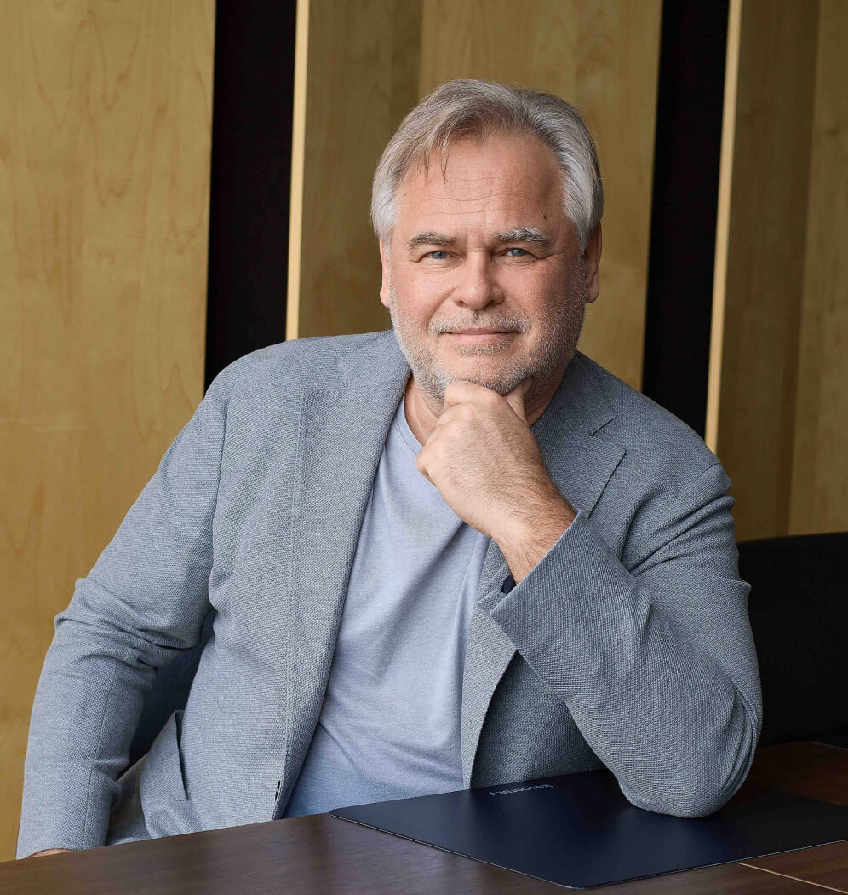

Введение

Евге́ний Валенти́нович Каспе́рский (род. 4 октября 1965, Новороссийск, Краснодарский край) — российский программист, один из ведущих мировых специалистов в сфере информационной безопасности и предприниматель. Один из основателей, основной владелец и нынешний глава АО «Лаборатория Касперского» — международной компании, занимающейся разработкой решений для обеспечения IT-безопасности, имеющей более 30 региональных офисов и ведущей продажи в 200 странах. Лауреат Государственной премии в области науки и технологий за 2008 год.
Евгений Касперский в течение нескольких лет открыто высказывает опасения по поводу угрозы кибератаки на критически важные объекты инфраструктуры, которая может привести к катастрофическим последствиям. Он поддерживает идею соглашения о нераспространении кибероружия, считая, что мировое сообщество должно положить конец гонке кибервооружений. В ходе своих поездок по всему миру Евгений Касперский регулярно делает доклады об опасностях, которые несут в себе кибервойны, и необходимости противодействовать эскалации киберугроз на глобальном уровне. Он рассматривает просвещение в области кибербезопасности в качестве ключевого условия для успешной борьбы с киберугрозами. Это касается как рядовых пользователей, так и специалистов в области IT-безопасности, которым зачастую не хватает квалификации. Евгений также активно поддерживает идею всеобщей стандартизации и принятия единых политик в области кибербезопасности, а также идею сотрудничества между государственными органами и компаниями, работающими в индустрии IT-безопасности.
Частными компаниями — особенно в IT-индустрии и отраслях, связанных с безопасностью, а также в некоторых стратегически важных отраслях, для которых IT-безопасность является важнейшим приоритетом — накоплен огромный практический опыт борьбы с киберугрозами, который государство могло бы использовать чрезвычайно успешно. Kaspersky Warns UK Government Of ‘Catastrophic’ Cyber Attack.
Информация
Обратная связь
| Параметр | Биографические сведения | Профессиональная деятельность | Вклад в развитие отрасли |
|---|---|---|---|
| Дата рождения | 4 октября 1965 года | Основатель и генеральный директор «Лаборатории Касперского» | Разработка инновационных антивирусных технологий |
| 2.1 | 2.2 | 2.3 | 2.4 |
| Образование | Высшее техническое | Создание одного из ведущих мировых производителей антивирусного ПО | Внедрение новых методов обнаружения и борьбы с вирусами |
| Ключевые достижения | Специалист в области информационной безопасности | Разработка первых антивирусных программ в России | Создание международных стандартов кибербезопасности |
| Международное признание | Признанный эксперт в сфере IT-безопасности | Участие в крупнейших международных проектах | Награды и признание профессионального сообщества |
| Текущие проекты | Активное развитие в сфере кибербезопасности | Руководство компанией и разработка новых продуктов | Расширение глобального присутствия компании |